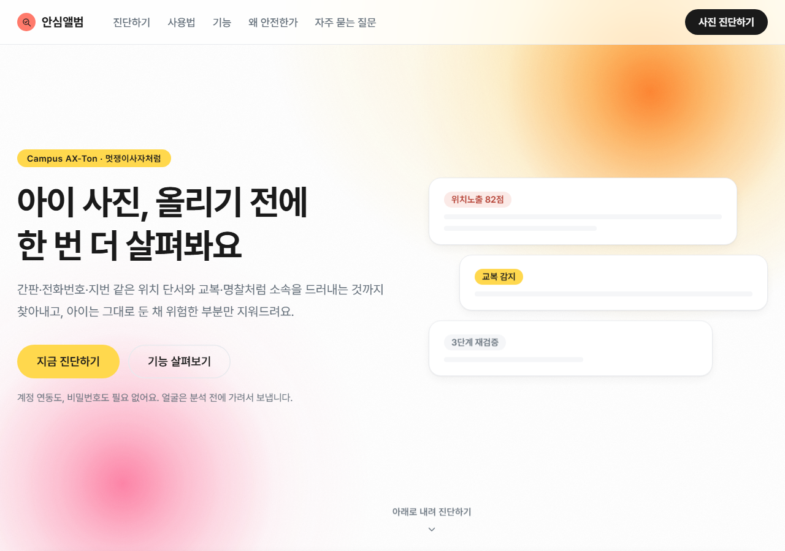
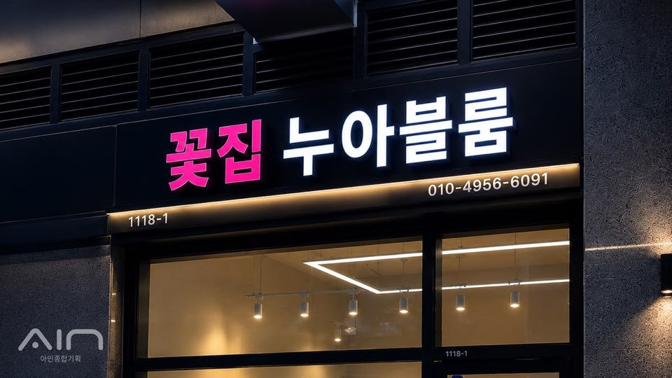

부모는 무심코 올리지만, 사진은 훨씬 많이 말합니다
아이 사진 한 장에는 얼굴만 있는 게 아닙니다. 뒤에 찍힌 간판의 전화번호와 지번, 교복·명찰 같은 소속 정보, 그리고 여러 장을 겹쳐보면 드러나는 요일·시간·장소의 반복 패턴까지 — 사진을 올리는 사람도 인지하지 못한 채 노출됩니다.
위험을 찾아내고, 아이는 그대로 둔 채 위험한 부분만 지웁니다
얼굴 검출 → 배경 텍스트 판독(Claude Vision, 실패 시 Tesseract 자동 폴백) → 위험도 진단 → 스마트 크롭/블러/인페인팅 보정 → 처리 결과 재검증까지, 한 번의 업로드로 이어지는 파이프라인입니다.


상호명 감지 전화번호 감지 지번 감지개발 중 정확도 검증에 실제로 썼던 사진입니다(사람 없음). 라벨 위치는 실측 판독 결과를 바탕으로 표시했습니다.
기획부터 배포까지, 77개 커밋으로 이어온 기록
목업 화면에서 시작해 단계마다 실제 기능을 하나씩 붙였습니다. 각 단계는 "일단 되는 것"이 아니라 "실측으로 확인된 것"만 다음 단계로 넘겼습니다.
얼굴 · 텍스트 실제 추출
face-api.js로 얼굴, Tesseract.js로 배경 텍스트를 실제로 뽑아내는 단계부터 시작. 야간 네온 간판 사진에서 텍스트 0개 검출 문제를 발견하고 PSM 모드 조합으로 해결.
✓ 실사진 기준 페이지 분할 모드 3종 비교로 검증Claude Vision으로 OCR 교체
Tesseract 오독 문제를 Claude Vision(claude-haiku-4-5)으로 해결. 실패 시 자동으로 Tesseract 폴백.
✓ 같은 사진으로 Tesseract vs Claude Vision 정확도 비교표 작성위험도 진단 · 캡션 제안 연동
규칙 기반 mock을 실제 Claude API 호출로 교체. 점수-등급 불일치를 발견해 등급을 서버에서 확정하도록 구조를 고침.
✓ 동일 입력 3회 반복 호출로 점수 편차 실측(6점)속도 개선
출력 토큰 제약 + 단계별 화면 표시로 체감 대기시간 단축.
✓ 출력 토큰 -34%, 응답시간 -26% 실측프라이버시 안전장치 긴급 수정
실제 사진 검증 중 "얼굴 0개 감지 시 마스킹 없이 원본 전송"되는 구멍을 스스로 발견. 최우선으로 확인 모달을 추가.
✓ 실패 조건 7가지 실측 — 4개(57%)에서 검출 실패 확인 후 수정배포
localhost 하드코딩 10곳, 서버리스 포트 문제, 요청 본문 4.5MB 제한 등 배포를 막던 문제를 하나씩 해결하고 팀 접근 코드로 Vercel 배포.
✓ 접근 코드 게이트 테스트 18개로 검증AI를 어디에, 왜 썼는가
- Claude Vision — 배경 텍스트 판독(전화번호·지번·상호명). 얼굴은 항상 마스킹 후 전송.
- Claude API(Haiku) — 위험도 진단, 캡션 제안, 생활패턴 분석, 이미지 편집 지시문 생성.
- fal.ai (flux-kontext-pro / inpainting) — 배경 재구성·인페인팅 기반 2단계 보정.
AI를 어떻게 확인했나 — 막혔던 것을 한 줄씩
디버깅은 안 되는 곳을 찾아 고치는 일입니다. 4주 동안 실제로 막혔던 것 중 넷만 남깁니다.
얼굴이 0명 검출되면, 마스킹 없이 원본이 그대로 외부로 전송되고 있었다.
원인`maskFaces()`가 검출된 얼굴이 없으면 아무 것도 가리지 않고 원본을 그대로 반환하도록 짜여 있었다.
고침얼굴 0명이면 즉시 전송을 멈추고 "안전 우선 / 그래도 원본 분석" 확인창을 먼저 띄우게 바꿨다. 실패 조건 7가지를 실측해 4개(57%)에서 검출이 뚫린다는 걸 먼저 확인한 뒤였다.
curl로 테스트할 때마다 Claude가 "모든 정보가 누락됐다"고 반복 답했다.
원인Claude가 불안정한 줄 알았지만, 실은 Windows Git Bash가 curl에 한글을 넘길 때 인코딩이 깨져 서버가 의미 없는 문자를 받고 있었다.
고침서버가 실제로 받은 요청 본문을 직접 찍어보고 원인을 확정, 브라우저(fetch)는 이 문제와 무관함도 확인 — 이후 한글 테스트는 curl 대신 Playwright로만 했다.
안내받은 위치에 스티커를 찍었더니 간판 글자는 그대로 남고 스티커는 빈 유리창에 찍혔다.
원인"상단 중앙" 같은 대략적인 위치 설명을 고정 좌표(15/50/85%)로 매핑했는데, 사진 구도마다 실제 픽셀 위치는 전혀 달랐다.
고침숫자 좌표를 직접 물어보는 방법도 실험했지만 정확도가 낮아 기각. 텍스트 '내용'은 Claude Vision, '위치'는 실측 OCR로 역할을 나눴다.
보정 화면에서 사진이 원본보다 확대·절단돼서 보였다.
원인예전 목업 이미지를 화면에 맞추려고 넣어둔 CSS가, 실제 처리된 이미지에도 그대로 남아 있었다(세로 사진은 43.8%가 화면 밖으로 잘려나갔다).
고침미리보기가 실제 저장되는 파일과 같은 비율로 보이게 고치고, "처리 후에도 비율은 같아야 한다"는 원칙을 세웠다.
- 이 넷 외에도 무료 회귀 테스트 55개 + 실제 API 호출 테스트 8개를 매 변경마다 실행
- AI 결과를 그대로 믿지 않고 3단계 재검증(같은 파이프라인에 재통과)을 별도로 구현